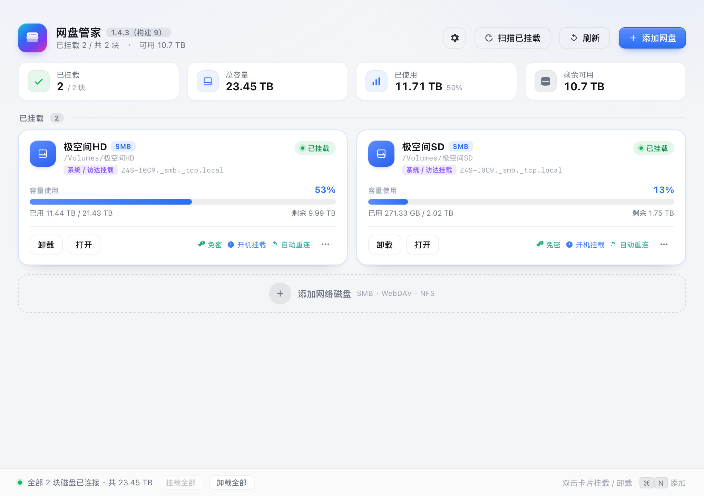
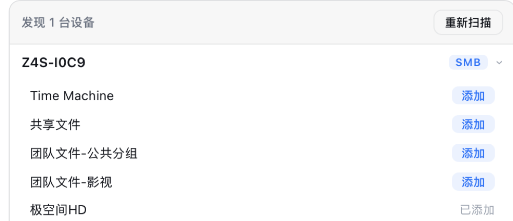
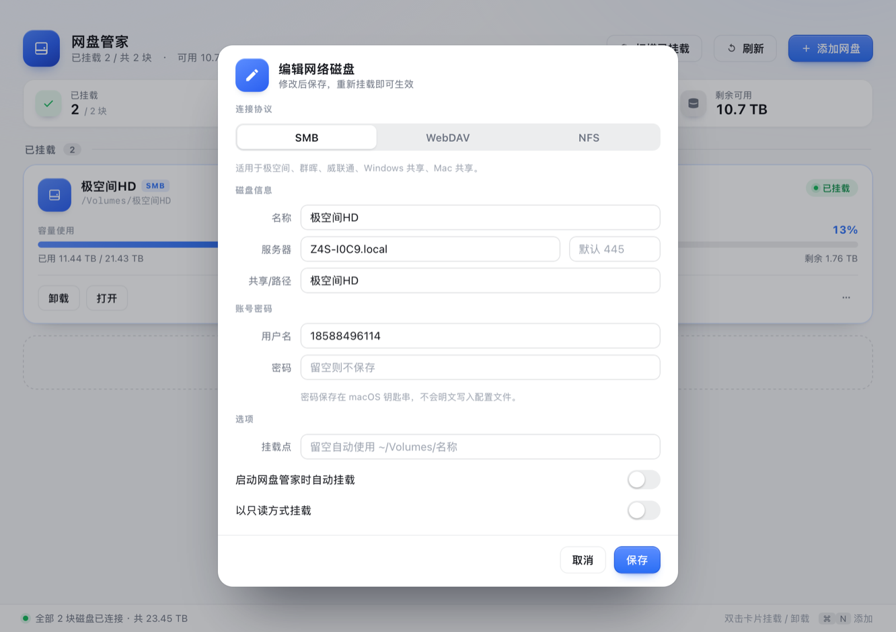
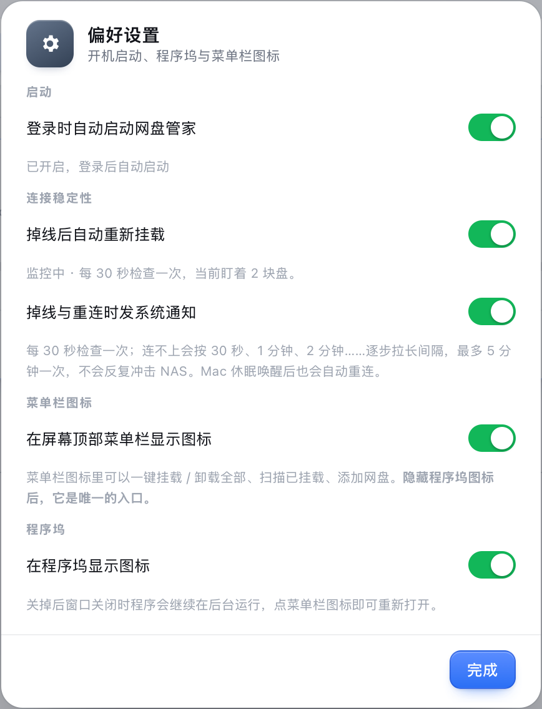
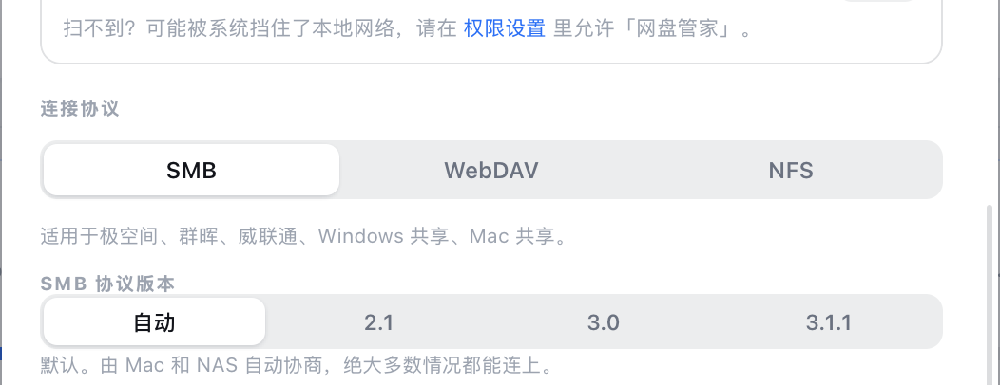
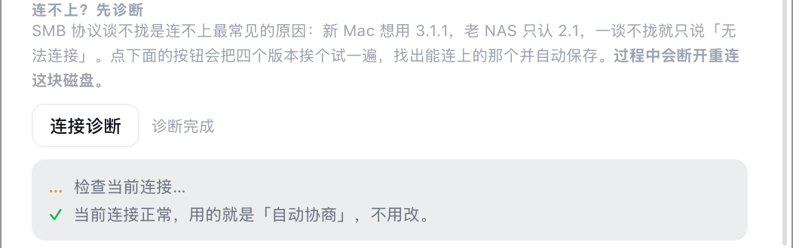
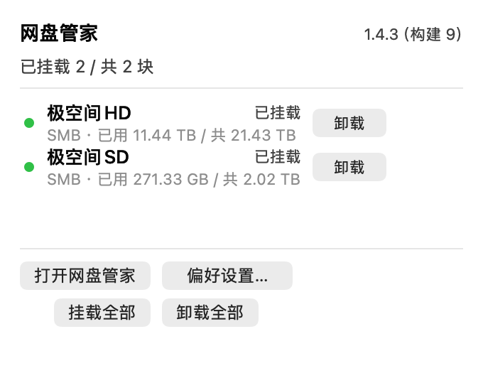
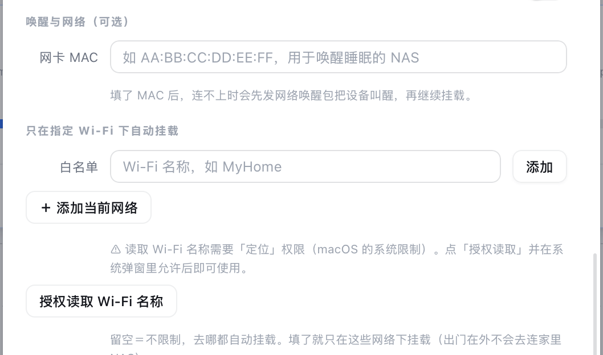

把极空间、群晖、威联通、Windows 共享、WebDAV、NFS
统一收进一个窗口，看状态、看容量、一键挂载。
按顺序读一遍约 10 分钟；赶时间可以直接跳到「一分钟上手」。
从打开应用到用上磁盘，一共三步。
| 现象 | 原因与解法 |
|---|---|
| 提示「连不上服务器」 | 九成是 IP 写错，或者 NAS 关机、Mac 和 NAS 不在同一个 Wi-Fi。先确认 NAS 能 ping 通。 |
| 提示「账号或密码不正确」 | 密码里如果有特殊字符，注意别被输入法换成全角；也可以先用访达连一次，让系统记住密码。 |
| 提示「已经在系统里挂载过了」 | 同一个共享不能挂两次。先在访达侧边栏把它断开，或者直接用已经挂着的那块。 |
整个窗口就五块区域，从上到下依次是标题栏、指标卡、磁盘分区、磁盘卡片、状态栏。

| 状态 | 卡片上显示什么 |
|---|---|
| 已挂载 | 实际挂载路径（如 /Volumes/极空间HD）、容量条、已用 / 总容量、剩余空间 |
| 未挂载 | 连接地址（如 smb://192.168.31.4/极空间HD），容量区提示「双击卡片或点挂载连接」 |
已挂载的卡片在路径下面有一行小字，左边一个标签，右边一串地址，合起来回答「它是怎么连上的」：
| 标签 | 含义 |
|---|---|
| 系统 / 访达挂载 | 这块盘是你在访达里连上的（或开机自动连上的），网盘管家只是把它收进来统一管理。所以它用的账号密码也来自系统。 |
| 网盘管家挂载 | 这一块是网盘管家自己按你填的地址连上去的。 |
标签右边那串地址（例如 Z4S-I0C9._smb._tcp.local）是系统真正使用的服务器地址，可能和「服务器」栏里填的名字不一样——Bonjour 会自动补上 ._smb._tcp.local 这类后缀。想把全部细节看全，点「编辑」，弹窗最上面的「当前挂载」会列出五项：挂载方式、协议、实际地址、账号、挂载点。
如果之前从没连过网络磁盘，界面会显示「还没有添加任何网络磁盘」，下面有两个按钮：添加网盘 和 扫描已挂载。直接点「添加网盘」开始就行。
不用记 IP、不用背共享名。打开「添加网盘」，应用会自己把同一网络里的 NAS 找出来，展开就能挑共享。

只要这台 Mac 以前连过一次这个 NAS——哪怕是用访达连的——网盘管家就能把密码接过来，以后挂载一律不再问。
| 顺序 | 来源 |
|---|---|
| ① 自己存的 | 你添加磁盘时填过密码 → 已存进 macOS 钥匙串，直接用 |
| ② 系统里存的 | 以前用「访达 › 前往 › 连接服务器」连过 → 密码已在系统钥匙串里，自动沿用 |
| ③ 都没有 | 挂载时由系统弹窗问一次，填完就记住了 |
凡是密码已经就位的磁盘，卡片底部会多一个绿色的 免密 标记。看到它就说明：下次点「挂载」不会再弹任何输入框。
不管是网盘管家挂的，还是访达挂的，只要系统里正挂着网络磁盘，启动时会自动收进列表，并默认开启「开机自动挂载」。卸载、重启、重装应用，记录都还在。
更关键的是挂载位置会原样记住：盘当时挂在 /Volumes/极空间HD，下次自动挂载就还挂到 /Volumes/极空间HD，不会换到 ~/Volumes 之类的地方。你在别的软件里配好的素材库、下载目录、项目路径，重启后照样读得到文件。
极空间HD-1。网盘管家发现路径对不上会直接报「没落在 …」，而不是将就挂在别处——先把重名的卷卸载掉再重试即可。
点「＋ 添加网盘」或按 ⌘N，弹出的表单分成四段：协议、磁盘信息、账号密码、选项。

三个按钮选一个。选完下面的灰色提示会跟着变，告诉你这个协议适合什么设备、端口默认是多少。
| 协议 | 默认端口 | 用在哪 |
|---|---|---|
| SMB | 445 | 极空间、群晖、威联通、Windows 共享、Mac 共享。家用 NAS 绝大多数用这个。 |
| WebDAV | 443 / 80 | 坚果云、Nextcloud、Alist、各类云盘。默认走加密 HTTPS；服务只提供明文 HTTP 时，在「选项」里关掉 WebDAV 使用 HTTPS 并填对端口即可。 |
| NFS | 2049 | Linux / NAS 导出的 NFS 目录，适合虚拟机、媒体库。挂载需要管理员权限。 |
点不同协议按钮，下面这几处会跟着改，不用手动调整：灰色说明文字、服务器输入框的示例、共享/路径输入框的示例、端口输入框里的默认值提示。所以先选协议，再填内容最省事。
协议选好之后，按「磁盘信息 → 账号密码 → 选项」的顺序往下填。
| 字段 | 怎么填 |
|---|---|
| 名称 | 只用于界面显示，随便起。极空间HD、家里的电影盘 都行。 |
| 服务器 | NAS 的 IP（如 192.168.31.4）或主机名（如 Z4S-I0C9.local）。推荐用 IP，比主机名稳。 |
| 端口 | 留空就用协议默认端口。除非你在 NAS 上改过，否则不用填。 |
| 共享/路径 | SMB 填共享文件夹名（极空间HD）；WebDAV 填路径（/dav）；NFS 填导出路径（/volume1/video）。 |
填登录 NAS 用的用户名和密码。密码会存进 macOS 钥匙串，不会明文写进配置文件；密码框留空表示不保存，挂载时会由系统弹窗问你。用户名里不能带冒号，避免被当成「用户名:密码」写进配置。
已经存过密码的盘，编辑时密码栏右边会多出 清除已存密码：连点两次即可单独清掉钥匙串里的这一条，不用删掉整块盘。清掉后下次挂载会先试系统里存的密码，再问你。
如果这个共享是公开的、不需要登录，两栏都留空即可。
| 选项 | 说明 |
|---|---|
| 挂载点 | 只读展示，不需要填。磁盘统一挂到 /Volumes/共享名，和访达完全一致。自定义目录需要把账号密码交给命令行（同机 ps 就能看见），出于安全考虑已不再支持；由系统自动收进来的盘会在这里显示它真实的挂载位置。 |
| 启动时自动挂载 | 打开开关后，每次启动网盘管家会自动连上这块盘。常用的盘建议打开。 |
| 以只读方式挂载 | 挂上以后只能读不能写，防止误删误改。给素材盘、备份盘用很合适。只读是通过系统挂载参数实现的，挂载后还会再核对一次：万一系统没有按只读挂上，会立刻卸载并提示，不会出现「以为只读、实际能写」的情况。 |
照着下表抄，把 IP 换成你自己的就行。
| 设备 / 服务 | 协议 | 服务器 | 共享 / 路径 |
|---|---|---|---|
| 极空间 | SMB | 192.168.31.4 | 共享文件夹名，如 极空间HD |
| 群晖 Synology | SMB | 192.168.1.10 | 共享文件夹名，如 video |
| 威联通 QNAP | SMB | 192.168.1.10 | 共享文件夹名，如 Public |
| Windows 共享 | SMB | 192.168.1.20 | 右键文件夹「属性 → 共享」里看到的共享名 |
| 另一台 Mac | SMB | 192.168.1.30 | 共享名（系统设置 → 通用 → 共享里可查） |
| 坚果云 | WebDAV | dav.jianguoyun.com | /dav（端口 443） |
| Nextcloud | WebDAV | 你的域名 | /remote.php/dav/files/用户名 |
| Alist | WebDAV | 192.168.1.10（端口 5244） | /dav（局域网 HTTP，需关掉 HTTPS 开关） |
| Linux NFS | NFS | 192.168.1.10 | 导出路径，如 /volume1/video |
smb:// 时，附近会自动列出局域网里的服务器。手机上的路由器 App 通常也能查到。
IP 更稳。主机名（如 Z4S-I0C9.local）依赖局域网的名称解析，偶尔会抽风；但 IP 有个缺点——路由器重启后可能变。想两头都要，在路由器里给 NAS 绑定固定 IP 最省事。
不行。系统层面同一个共享只能挂一次，第二次会报「已经在系统里挂载过了」。真需要两个入口，就在 NAS 上把同一个文件夹多共享一份，用不同的共享名。
所有操作都集中在卡片上：三个按钮，加一个「⋯」菜单。
两种方式，效果一样，看你顺手：
操作期间状态胶囊会变成「处理中」，按钮暂时变灰，完成后自动恢复。挂载通常 1～3 秒，网络慢时会久一点。
卡片上的「打开」按钮会在访达里打开这个磁盘，等同于在侧边栏点它。未挂载时按钮是灰的，先挂载。
点卡片右下角的三个点，有四项：
| 菜单项 | 做什么 |
|---|---|
| 编辑连接信息… | 改名称、地址、账号、挂载点、开关。改完保存，需要重新挂载才生效。 |
| 复制地址 | 把 smb://服务器/共享 这样的地址复制到剪贴板，方便粘到别的软件里。 |
| 设为 / 取消开机自动挂载 | 切换这块盘是否随应用启动自动连上。打开后卡片上会出现「开机挂载」小标记。 |
| 移除这块磁盘 | 从列表里删掉这条记录。只删记录，不删服务器上的文件，如果当前挂着会先卸载。 |
如果你在访达里手动连了一块新的网络盘，点「扫描已挂载」（或按 ⌘⇧I），应用会把它找出来并纳管，不用再手动填一遍表单。
容量和状态每 4 秒自动更新一次，一般不需要手动刷新。如果在别处卸载了磁盘、或者网络刚恢复，点一下「刷新」（⌘R）立刻同步。
卡片上的颜色不是装饰，都在告诉你磁盘的当前情况。
| 显示 | 含义 |
|---|---|
| ● 已挂载 | 磁盘已经连上，可以读写（或只读）。卡片显示实际挂载路径和容量。 |
| ● 未挂载 | 记录还在，但当前没连上。卡片显示连接地址，容量区提示双击可挂载。 |
| ● 处理中 | 正在挂载或卸载，按钮暂时变灰，等它变完再操作。 |
| 颜色 | 已用比例 | 提醒 |
|---|---|---|
| 蓝 / 紫 / 青 | 低于 75% | 正常。颜色跟着协议走：SMB 蓝、WebDAV 紫、NFS 青。 |
| 橙色 | 75% 以上 | 该清理了，或考虑扩容。 |
| 红色 | 90% 以上 | 快满了。NAS 写满后可能连删除都会失败，尽快处理。 |
挂载失败时，卡片底部会出现一条红底提示，写的是人话原因，不是系统原始报错。常见的有：
对应的处理办法见第 14 页「遇到问题怎么办」。
刚挂载上的一两秒内，系统还没统计完容量，会短暂显示「容量读取中…」，属于正常现象，等下就好。如果一直停在这个状态，通常是磁盘已经掉线了——点刷新或重新挂载。
常用的几个动作都给了快捷键，不离开键盘就能操作。
| 快捷键 | 功能 |
|---|---|
| ⌘N | 添加网盘（打开新建表单） |
| ⌘⇧I | 扫描已挂载，把系统里的网络磁盘纳管进来 |
| ⌘R | 刷新状态与容量 |
| ⌘? | 打开这份使用说明书 |
| ⌘↵ | 在表单里保存（等同于点「保存」） |
| esc | 关闭当前弹窗 / 取消编辑 |
| ⌥⌘M / K / U | 全局：显示窗口 / 挂载全部 / 卸载全部（见第 14 章） |
| 菜单 | 内容 |
|---|---|
| 网盘管家 | 关于、隐藏（⌘H）、退出（⌘Q） |
| 编辑 | 撤销、重做、剪切、拷贝、粘贴、全选——在表单里填字时用得上 |
| 磁盘 | 添加网盘…（⌘N）、扫描已挂载（⌘⇧I）、刷新状态（⌘R） |
| 窗口 | 最小化、缩放 |
| 帮助 | 使用说明书（⌘?） |
按卡片上出现的提示原文查下表，九成问题都能自己解决。
| 提示原文 | 原因 | 怎么解决 |
|---|---|---|
| 账号或密码不正确 | 用户名密码错、账号被锁、或 NAS 只允许特定账号访问共享 | 先在访达 ⌘K 里连一次验证账号；改密码后要重新编辑保存 |
| 找不到这台服务器 | IP 写错、NAS 关机、不在同一网络 | 确认 NAS 开机；把服务器改成 IP 而不是主机名；检查 Mac 和 NAS 是否同一 Wi-Fi |
| 服务器上找不到这个共享文件夹 | 共享名拼错，或该账号没有这个共享的权限 | 共享名区分大小写，去 NAS 后台核对；确认账号有读写权限 |
| 这个共享已经在系统里挂载过了 | 同一共享不能挂两次 | 访达侧边栏断开旧的，或直接使用已挂载的那块 |
| 挂载超时 / 连接被拒绝 | 端口被防火墙拦、SMB 服务没开 | NAS 后台确认 SMB/WebDAV 服务已启用；检查端口号 |
| 权限不足（NFS） | NFS 挂载需要管理员权限 | 系统授权框里输入开机密码即可；取消了就再点一次挂载 |
| 挂载后容量一直「读取中」 | 磁盘已掉线，或网络中断 | 点刷新；仍不行就卸载后重新挂载；检查网络 |
如果是从 DMG 或 PKG 装到另一台 Mac，第一次打开可能提示「无法验证开发者」。这是正常的——应用没有购买苹果开发者证书。任选一种放行：
xattr -dr com.apple.quarantine /Applications/网盘管家.app放行一次就永久有效，之后双击直接打开。
这一页告诉你东西都存哪儿了，以及怎么彻底清理干净。
| 内容 | 位置 |
|---|---|
| 磁盘列表 | ~/Library/Application Support/NetMount/drives.json |
| 密码 | macOS 钥匙串，全部磁盘统一存在一条 NetMount 记录里，不会明文落盘 |
| 挂载点 | 默认 /Volumes/共享名，和访达挂载的位置完全一致；由系统自动收进来的盘会锁定成实际位置，重启后原样挂回 |
配置文件里只有名称、地址、账号这些信息，没有明文密码。想手动备份磁盘列表，复制 drives.json 即可；换电脑时把它放回同一位置，列表就回来了（密码需要重新填）。
NetMount 手动查看或删除~/Library/Application Support/NetMountNetMount 删除把 网盘管家-1.5.0.dmg 拷过去，打开后把图标拖进「应用程序」即可。安装包是通用二进制，Apple 芯片和 Intel 芯片的 Mac 都能装。第一次打开记得按上一页说的方法放行一次。
屏幕顶部的菜单栏里有一个网盘管家的小图标，点一下就能操作，不用先把窗口翻出来。

左键点图标直接打开主窗口；右键点图标弹出快捷菜单：
| 菜单项 | 作用 |
|---|---|
| 已挂载 2 / 共 2 块 | 一眼看到当前挂载情况（不可点） |
| 打开网盘管家 | 把主窗口调到最前 |
| 挂载全部 / 卸载全部 | 批量操作；全部已挂载时「挂载全部」变灰 |
| 每块磁盘各一行 | 单独挂载或卸载某一块，不用开窗口 |
| 扫描已挂载 / 添加网盘… | 和窗口里的按钮等效 |
| 开机启动 / 在程序坞显示图标 | 两个开关，带勾选标记 |
| 退出网盘管家 | 完全退出程序 |
在菜单栏图标 → 在程序坞显示图标里关掉它，程序坞就不再出现网盘管家。这时候：
打开开机启动后，登录 macOS 时网盘管家会自动起来，并把标了「开机挂载」的磁盘连上——开机就能在访达里用，不用手动挂。
三处改的是同一份设置，改完立刻生效，重启后依然记得。
| 时机 | 网盘管家做什么 |
|---|---|
| 登录 macOS | （开了开机启动才有效）程序自己起来，不弹窗口 |
| 标了「开机挂载」的磁盘 | 自动连上，密码从钥匙串取，不用你输 |
| 没标「开机挂载」的磁盘 | 只记住配置，不自动连；想连就点一下「挂载」 |
SMB 磁盘隔三差五自己掉线是常态，不该每次都要你手动点「挂载」。网盘管家在后台盯着每一块盘，掉了自己接回来。
后台每 30 秒巡一次。判断标准不是看挂载表里还有没有——SMB 掉线时挂载点常常还挂在表里，界面显示「已挂载」，但一访问就卡死。所以每次都是真的去读一次目录，读得回来才算健康。
重连过程中，卡片右上角的状态胶囊会变成「xx 秒后重连」并读秒；连上后恢复「已挂载」。
NETMOUNT_LOG=1 就能看到每一步为什么这么决定。
打开「掉线与重连时发系统通知」后：掉线时提醒一次「正在自动重连」，连上了再提醒一次「已重新连接」——中间的重试不刷屏。隐藏程序坞图标时，这是唯一能主动提醒到你的渠道。第一次触发时系统会问你要不要允许通知，允许即可；不允许也不影响自动重挂本身，界面上的提示条一样看得到。
连不上的时候，先怀疑协议版本谈不拢；不知道该选哪个，就让程序替你试。
macOS 的 SMB 客户端会先和服务器「协商」用哪个版本的协议。新 Mac 想谈 3.1.1，老 NAS、老路由器、智能电视的共享只认 2.1，一谈不拢就只回报一句「无法连接」——看不出该改什么，这是 SMB 挂载失败最常见的原因。
| 版本 | 什么时候选它 |
|---|---|
| 自动 | 默认。由 Mac 和 NAS 自己协商，绝大多数情况都能连上 |
| 2.1 | 兼容性最好。老 NAS、老路由器、电视盒子的共享目录通常只认这个 |
| 3.0 | 支持传输加密与多通道，速度和安全性都比 2.1 好 |
| 3.1.1 | 最新版，需要 NAS 和 Mac 都支持；协商失败就退回 2.1 试试 |
这一项只对 SMB 磁盘有意义，选 WebDAV / NFS 时编辑器里会自动收起。改完保存，下次挂载生效。

不知道该选哪个版本？点编辑磁盘里的「连接诊断」，网盘管家会把 自动 / 2.1 / 3.0 / 3.1.1 挨个试一遍，找出能连上的那个并自动存进这块磁盘的设置里，不用你猜。

| 位置 | 能做什么 |
|---|---|
| 编辑磁盘 › SMB 协议版本 | 选协议版本、点「连接诊断」 |
| 编辑磁盘 › 选项 | 「掉线后自动重新挂载」开关（每块盘单独设） |
| 偏好设置 › 连接稳定性 | 总开关：自动重挂、系统通知 |
| 卡片 ⋯ 菜单 | 开关自动重挂、连接诊断、立即重新连接一次 |
| 菜单栏 磁盘 › 检查所有连接 | 立刻巡一遍，不用等下一个 30 秒 |
不切窗口、不找图标也能干活——这是菜单栏应用该有的样子。
点屏幕顶部的菜单栏图标，会弹出一块小面板，一眼看完所有盘：

| 位置 | 显示什么 |
|---|---|
| 主窗口标题右侧 | 如 1.6.0，小胶囊样式，最显眼 |
| 菜单栏左键面板 | 如 1.6.0（构建 13）， 带构建号 |
| 偏好设置 › 关于 | 同上，另有系统要求与芯片说明 |
右键（或按住 control 再点）弹出完整菜单，每一项都配了图标，扫一眼就知道是干什么的：
| 分组 | 内容 |
|---|---|
| 状态 | 已挂载 x / 共 y 块（不可点，纯展示） |
| 窗口 | 打开网盘管家、偏好设置… |
| 批量 | 挂载全部、卸载全部 |
| 逐块 | 每块盘一行，点一下就挂载 / 卸载，后面标着当前状态 |
| 工具 | 扫描已挂载、检查所有连接、添加网盘… |
| 开关 | 开机启动（打勾表示已开）、在程序坞显示图标 |
正在写文档、正在看视频，想挂个盘不用先去找图标：
| 快捷键 | 功能 |
|---|---|
| ⌥⌘M | 显示 / 隐藏主窗口（窗口在前面就收起，否则拉到最前面） |
| ⌥⌘K | 挂载全部磁盘 |
| ⌥⌘U | 卸载全部磁盘 |
开关在偏好设置 › 全局快捷键，关掉后这三个组合键交还给系统。
让「在家自动连上、出门不要瞎连」，再让睡着的 NAS 自己醒过来。
笔记本带出门以后还去连家里的 NAS，轻则刷一堆连不上的错误，重则挂到一台同名的陌生设备上。在编辑磁盘 › 只在指定 Wi-Fi 下自动挂载里填上 Wi-Fi 名字即可：

| 情形 | 程序会怎么做 |
|---|---|
| 在允许的 Wi-Fi 下 | 照常自动挂载 |
| 不在允许的 Wi-Fi 下 | 跳过并标注；切回允许的网络后自动补挂 |
| 读不到 Wi-Fi 名称 | 放行（网线、热点、没授权定位都属于这种） |
NAS 休眠时，地址是对的、账号是对的，就是连不上——因为它根本没醒着应答。在编辑磁盘 › 唤醒与网络 › 网卡 MAC 里填上设备网卡的 MAC 地址，挂载前就会先把它叫醒：
FF 加 16 遍 MAC，走 UDP 9 端口，全局广播与各网段定向广播都发一遍（不少路由器会丢弃 255.255.255.255）| 情形 | 程序会怎么做 |
|---|---|
| 端口通（设备醒着） | 不发唤醒包，直接挂载 |
| 端口不通 + 填了 MAC | 发魔术包，等最多 10 秒，通了就接着挂 |
| 端口不通 + 没填 MAC | 直接报「连不上」，走退避重试 |
| 设备关机 / 不支持唤醒 | 叫不醒，按普通失败处理，不卡界面 |
| 途径 | 说明 |
|---|---|
| 局域网发现自动带出 | 用「扫描」找到的 NAS，MAC 会顺手填好（从系统 ARP 表里读） |
| NAS 后台 / 路由器后台 | 极空间 / 群晖 / 威联通在网络设置里就能看到；路由器已连接设备列表里也有 |
填什么都行：AA:BB:CC:DD:EE:FF、aabbccddeeff 都会自动规范化，位数不对会被忽略。
攒了十几块盘的配置，换台 Mac 不想再填一遍。
在偏好设置 › 配置备份与恢复里：
网盘管家配置-1.5.0.json***，排查反复掉线、发现不到设备时用它/System、/etc 这类系统目录，
程序会忽略这个挂载点并改用默认的 /Volumes/<共享名>， 避免一份来路不明的备份把盘挂到系统目录上。